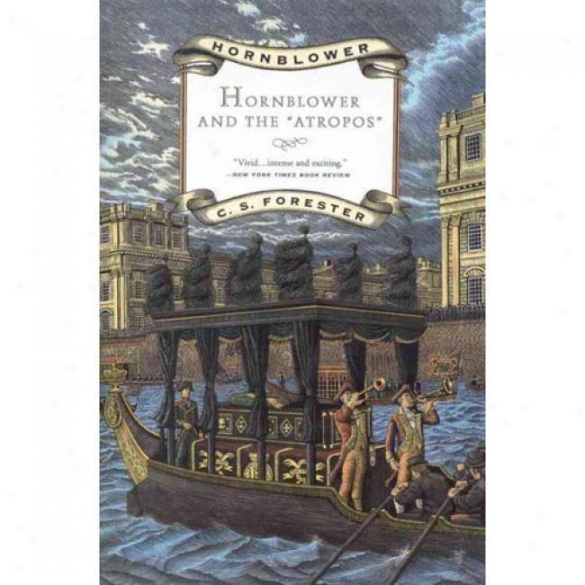
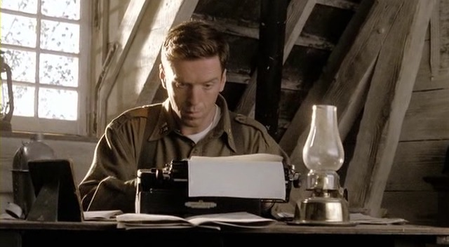
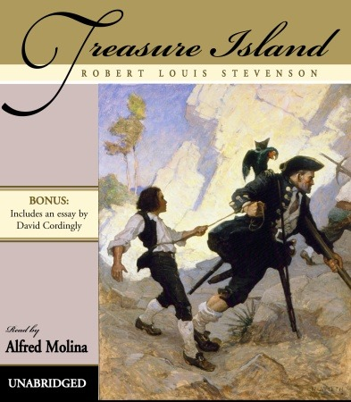
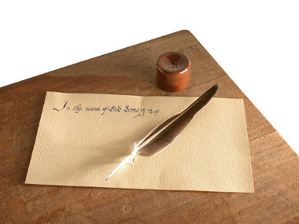
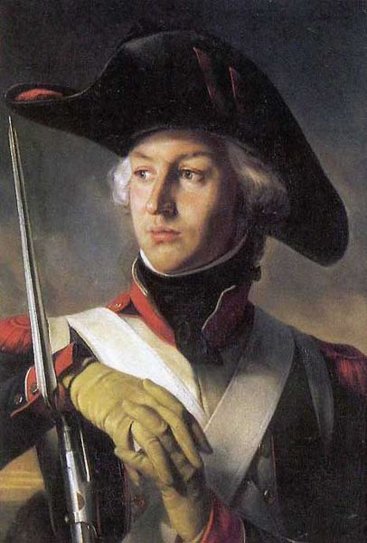
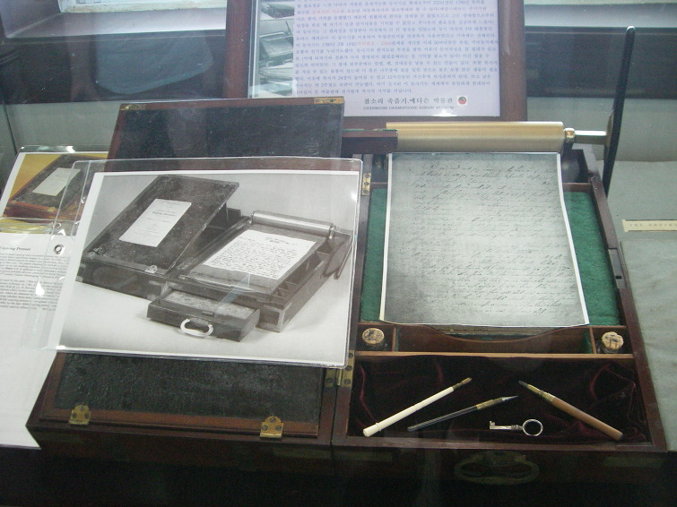
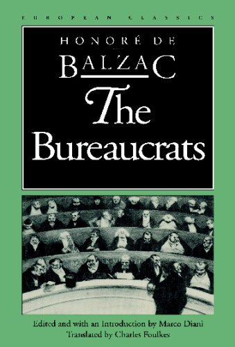
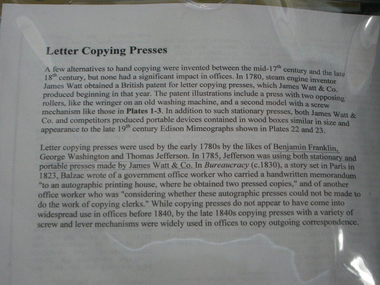

나폴레옹 시대의 복사기
게시: 2019-06-13T06:30:49+09:00
Hornblower and the Atropos by C.S.Forester (배경: 1805년 영국 근해 HMS Atropos 함상) ---------------- (아트로포스 호의 함장인 혼블로워는 밤늦도록 그날 있었던 프랑스 사략선 나포건에 대한 보고서 작성을 막 끝내고 보고서 내용에 나름 흡족해하며 다시 읽어보고 있는 중입니다.) 함장실 문에 노크가 있었다. 대체 방해받지 않을 순간이 전혀 없단 말인가 ? "들어와." 그가 말했다. 들어온 사람은 선임사관인 존스였다. 그는 혼블로워의 손에 들려져 있는 깃털펜과 테이블에 놓인 잉크병과 종이들을 힐끗 쳐다보았다. "실례합니다, 함장님." 존스가 말했다. "제가 너무 늦게 온 게 아니었으면 합니다." "무슨 일인가 ?" 혼블로워가 물었다. 그는 존스 중위에 대한 동정심이 별로 없었고, 그의 어정쩡한 태도도 마음에 들지 않았다. "해군성에 보고서를 보내실 생각이셨다면 말입니다, 그러실 생각이셨던 것 같습니다만, 함장님..." "그래, 물론 그럴 생각이네." "혹시 제 이름을 언급하실 생각이신지는 모르겠습니다만, 함장님... 그러실 것인지 여쭈려는 것은 아닙니다만, 함장님... 감히 제멋대로 생각하려는 건 아닙니다만..." 만약 존스가 해군성에 보낼 보고서에다 자신에 대해 특별히 잘 언급해달라고 부탁하는 것이라면 그런 부탁은 절대 들어주지 않을 생각이었다. "대체 말하고자 하는 바가 뭔가, 미스터 존스 ?" "제가 말씀드리려는 것은 그저 제 이름이 너무 흔한 것이라서 말입니다, 함장님, 존 존스라는 이름 말입니다. 현재 중위 명부에 오른 것만도 12명의 존 존스가 있습니다, 함장님. 알고 계셨는지는 모르겠습니다만, 저는 9번 존 존스 (John Jones the Ninth)입니다. 해군성에서는 저를 그렇게 지칭합니다, 함장님. 만약 함장님 보고서에 그렇게 씌여있지 않다면, 아마도..." "잘 알겠네, 미스터 존스. 무슨 말인지 이해하네. 제대로 처리가 될 거라고 믿어도 되네." "감사합니다, 함장님." 존스가 나간 뒤, 혼블로워는 가볍게 한숨을 내쉬고, 자신의 보고서를 들여다 보고는, 새 종이를 한장 꺼냈다. 존스의 이름 뒤에다 '9번 (the Ninth)'이라는 글자를 읽을 만하게 삽입할 방법은 도저히 없었다. 할 수 있는 유일한 방법은 새 종이 위에다 처음부터 완전히 새로 쓰는 것이었다.
--------------------------------------------------------------------------------------------------------------

위에 인용한 소설 한 구절에서 무엇을 느끼시나요 ? 저는 아, 워드 프로세서는 신의 축복 (또는 빌 게이츠의 축복?)이구나 하는 생각이 듭니다. 아울러, 워드 프로세서가 없었던 나폴레옹 시대의 문서 작업에 대해서 생각을 하게 되지요. 군인이라는 직업에서 성공하려면, 꼭 적군을 많이 죽이는 것만으로는 충분치 않습니다. 자기가 이러이러한 지휘력을 발휘하여 이러이러한 전과를 올렸다는 것을 상부에 제대로 알리는 것이 꼭 필요합니다. 사실 이건 꼭 군인이라는 직종에서 뿐만 아니라, 조직화 되어 있어서 상관이라는 작자들이 존재하는 모든 직장에서 공통적으로 적용되는 이야기지요. 제대로 된 보고서를 쓰기 위해서는 무엇보다도 보고서 내용이 가장 중요합니다. 일단 그 보고 내용이 패전보다는 승전 쪽에 가까운 것이 좋을 것이고, 또 문체가 간결하면서도 자연스러워, 읽는 사람이 요점을 쉽게 파악할 수 있도록 조리있게 쓰는 것이 좋습니다. 저는 우리 교육에서 영어 교육보다는 국어 교육이 더 중요하다고 생각하는데, 그 이유가 바로 이 문장력 때문입니다. 대학도 나오고 직장생활도 할 만큼 한 사람들이 쓴 보고서나 메일을 읽어보면, 대체 이 사람이 말하고자 하는 요지가 뭔지 도통 알 수 없는 경우도 많거든요. 어떤 사람은 국어를 잘하는 사람이 영어도 잘한다고 하던데, 거기에도 동의합니다. 결국 언어라는 것은 의사 소통 수단이고, 의사 소통이 원활하려면 생각과 사실을 언어로 조리있게 정리해서 조합해야 하는 것이쟎습니까 ? 결국 한국말로 또이또이하게 말할 수 있는 사람이 영어로도 (발음은 둘째치고) 또이또이하게 말할 수 있다고 생각합니다.

(Band of Brothers의 한 장면이지요. 딕 윈터스 대위, 승진을 위해서는 M1 소총보다 타자기를 더 잘 다루어야 한다는 것을 깨닫게 되다 !) 보고 내용도 승전보이고, 문장도 조리있게 잘 작성되었다고 하면, 그 다음엔 글씨가 문제가 됩니다. 요즘이야 타자기를 거쳐 워드 프로세서에서 대부분의 보고서가 작성되니까, 작성자는 어떤 폰트를 고를지만 생각하면 됩니다. (대개의 경우 아예 폰트도 미리 지정해두지요.) 그러나 나폴레옹 시대처럼 아직도 이게 보고서인지 문학 작품인지 헷갈려하는 시대에는, 그 내용 못지 않게 우아한 글씨체도 중요했습니다. 우아한 글씨체가 정말 중요한 이유는, 알파벳 문화권에는 인쇄체와 필기체라는 것의 차이가 꽤 컸기 때문이기도 했습니다. 유명한 아동 문학인 '보물섬'의 한 장면을 보시지요.

보물섬, 로버트 루이스 스티븐슨 작 (배경 : 18세기 후반 영국) --------------------------------------- 그래서 몇 주가 지난 뒤, 마침내 어느날 닥터 리브지께 편지가 한 통 날아들었다. 그 편지에는 '닥터의 부재시에는 톰 레드루쓰 또는 젊은 호킨스가 개봉할 것' 이라는 조건이 붙어 있었다. 그 조건에 따라 우리는, 사실 우리라기 보다는 나는 -- 왜냐하면 산지기 레드루쓰는 인쇄된 것 외에는 잘 읽지 못했기 때문이었다 -- 다음과 같은 중요한 소식을 읽게 되었다. ----------------------------------------------------------------------------------------------------------- 사실 저도 산지기 톰 레드루쓰처럼 필기체의 알파벳은 잘 읽지 못합니다. 제가 국민학교 때 저 위 문장을 읽고는, '나는 저런 무식한 사람이 되지 말아야지'라는 생각에, 중학교에 진학하여 영어를 배울 때 필기체 쓰는 연습도 나름 열심히 했었습니다만 (요즘도 학교에서 필기체 읽고쓰는 것을 따로 배우나요 ?) 여전히 필기체 문장은 읽기가 힘들더군요. 그래서 가끔씩 볼 수 있는 나폴레옹 시대의 그림이나 편지에 씌인 글을 읽는데 애를 많이 먹습니다. 글쎄요, 아마 저 뿐만 아니라, 나폴레옹 당시 사람들 중에도 (저 레드루쓰처럼) 남이 필기체로 쓴 편지를 읽기 힘들어 하는 사람이 많았을 것입니다. 특히 원래 쓴 글씨가 개발새발이라면 더더욱 그랬겠지요. 그래서 글씨를 예쁘고 신속하게 써줄 수 있는 서기(clerk)이라는 직업이 있었지요. 나폴레옹도 자기가 직접 펜대를 굴리며 글을 쓴 경우가 (특히 나중에 황제가 된 이후에는) 그다지 많지 않았습니다. 대개 몇명의 서기들에게 둘러 싸여 속사포처럼 빠르게 구술을 하면, 서기들이 진땀을 흘리며 받아 적었지요. 이 시대의 서기들은 글씨를 예쁘게 쓰는 것 외에도 독특한 할 일이 더 있었습니다. 모래질이었습니다. '아르마다', 개럿 매팅리 작, 박상이 옮김, 가지않은 길 출판 (배경 : 1589년 스페인의 무적함대 사건 당시) -------- (스페인 펠리페 2세의 침착성에 대한 일화입니다.) 그 비서는 익숙하지 않은 일 때문에 신경을 곤두세우다가 왕에게 금방 쓴 문서를 받아들자 그것을 모래로 문지르는 대신 그만 잉크병을 쏟아버렸다. 왕이 진노하리라는 생각에 몸을 움찔하던 비서는 이런 말을 들었을 뿐이다. "그것은 잉크라네. 이것이 모래라네." -------------------------------------------------------------------------------------------------------------------- 대체 왜 방금 쓴 문서를 모래로 문질렀을까요 ? 짐작하시다시피, 잉크를 말리기 위한 것이었습니다. 당시 잉크는 매염제(gall, 일종의 진딧물 벌레집), 검댕, 황산철, 고무질 등을 섞어만든 것으로서, 요즘의 잉크처럼 종이에 잘 흡수되지 않았습니다. 따라서, 깃털펜에 이런 잉크를 묻혀서 정성껏 쓴 다음에, 곧장 종이를 접어 봉투에 넣었다가는 아직 마르지 않은 잉크가 종이에 그대로 찍혀 일종의 데칼코마니가 되기 쉽상이었습니다. 따라서, 그 잉크를 말리는 작업을 해야 했는데, 불에 종이를 쬐다가는 자칫 불이 붙어버릴 위험도 있었고, 또 종이가 누렇게 말라비틀어질 수도 있었으므로 불로 말리는 것은 그리 좋지 않은 방법이었습니다. 그래서 나온 방법이 바로 아직 마르지 않은 잉크 위에 고운 모래를 뿌리는 것이었습니다. 고운 모래는 잉크를 순식간에 흡수해버릴 수 있는데다가, 고운 모래로 문지른 종이면은, 당시 품질이 그리 좋지 못한 종이면을 곱게 갈아주어 표면의 느낌을 맨질맨질하게 해주는 효과까지 내주었습니다.

(사진 속 편지 위의 작은 후추병 같은 것이 sand shaker 입니다. 저것으로 고운 모래를 편지 위에 뿌렸습니다.) 이렇게 금방 쓴 잉크 위에 모래를 뿌리던 관습과 나폴레옹에게 연관된 이야기도 있습니다. 나폴레옹의 휘하 장군들 중 가장 일찍부터 나폴레옹을 섬기기 시작했던 사람은 바로 '폭풍우'라는 별명을 가진 쥐노(Jean-Andoche Junot)였습니다. 그는 1795년 툴롱 포위전 때 나폴레옹을 만났는데, 당시 나이가 겨우 2살 많았던 나폴레옹이 이미 대위 계급이었던 것에 비해 일개 하사관에 불과했습니다. 그는 그래도 혁명 전에는 파리에서 법학을 공부하던 (얼마나 열심히 했는지는 미지수...) 법학도였던지라, 나폴레옹의 서기로 임명이 되었습니다. 툴롱 포위전이 한창일 때, 나폴레옹이 전선에서 뭔가를 구술하여 쥐노에게 받아쓰게한 직후였습니다. 바로 옆에 영국군의 포탄이 떨어져 흙먼지가 나폴레옹과 쥐노에게 우수수 떨어졌는데, 쥐노는 전혀 놀라지 않고 나폴레옹에게 이렇게 말했다고 합니다. "덕택에 편지에 모래를 뿌리지 않아도 되겠네요." 이 용기와 재치가 넘치는 애드립에 깊은 인상을 받은 나폴레옹은 이때부터 쥐노를 진정한 부관으로 생각했고, 그 결과 쥐노의 인생이 확 변하게 되었지요.

(실제 전공에서나 사람들의 비망록에서나, 쥐노는 그다지 능력있는 사람으로 부각되지는 못했습니다. 다만 그의 젊은 와이프를 나폴레옹이 무척 좋아했다고...) 나폴레옹 시대에 서기라는 직업을 가진 사람이 하는 주요 업무는 구술 받은 편지나 문서를 쓰고, 거기에 모래 뿌리는 것 외에도 또 중요한 것이 하나 더 있었습니다. 바로 인간 복사기 ! 당시에는 타자기는 커녕, 아직 먹지(carbon paper)가 발명되지 않았던 때라서, 편지든 뭐든 문서라는 것을 하나 만든 다음에는 그 복사본을 손으로 일일이 베껴써야 했습니다. 구텐베르크의 금속 활자가 인류 문명을 바꾸어 놓기는 했습니다만, 아직 서기의 일상 업무를 바꾸지는 못했거든요. 따라서 나폴레옹의 참모 본부에 있던 서기들은 정말 눈알이 빠져라 열심히 서류들을 써대고, 베껴대야 했습니다. 특히 나폴레옹처럼 말이 많고 편지도 많이 썼던 사령관 밑에 있던 서기들은 정말 죽고 싶었을 것입니다. 그런데, 사실 나폴레옹 시대에 이미 복사기가 이미 있었습니다. 프랑스 혁명 발발 전이던 1785년 조지 워싱턴과 벤자민 프랭클린 등이 독립선언문을 (손으로) 작성할 때, 이미 복사기를 이용하여 여러 본의 독립선언문을 동시에 만들었다고 합니다. 이 복사기는 과연 어떤 물건이고, 누구에 의해 만들어졌을까요 ? 미국인들에게는 자존심 상하게도, 미국 독립선언문을 복사한 복사기는 영국제였습니다. 제조사는 James Watt & Co. 사였습니다. 예, 바로 증기 기관을 발명했던 바로 그 제임스 와트가 맞습니다. 이 복사기는 1780년에 제임스 와트가 특허를 받은 것으로서, 제임스 와트가 개인적인 필요에 의해서 만들었습니다. 와트는 사업상 하도 많은 편지를 주고 받았기 때문에, 자기가 어떤 내용의 편지를 써서 보냈는지 일일이 정확히 기억할 수가 없었습니다. 그래서 편지를 쓸 때마다 최소한 한통씩 복사본을 만들어 두어야 했었는데, 와트는 나폴레옹이 아닌지라 서기들로 둘러 싸이지 않아서, 자기가 직접 베껴야 했었나 봅니다. 그래서 만든 것이 바로 습식 복사기였습니다.

(이건 강릉 경포대 바로 옆에 있는 참소리 박물관이라는 곳에 전시된 진짜 James Watt 의 복사기입니다. 전 세계에 원본이 이거 딱 1대 남았는데, 그것이 놀랍게도 우리나라의 이 박물관에 있다고 하네요. 이 박물관은 한마디로 말하면 에디슨 박물관인데, 처음에는 비싼 입장료 (대인 7천원)에 놀라고, 다음에는 전시품들의 알참과 진귀함에 놀라고, 박물관 직원들의 재미있는 해설에 또 놀랐습니다. 한마디로 강릉 관광가실 때 강추. 돈이 별로 아깝지 않았습니다.) 이 습식 복사기의 원리는 나름 간단했습니다. 잉크도 좀더 진하고 특수하게 만들고, 종이를 아주 얇은 종이를 골라서 문서를 쓴 뒤, 그 원본 문서와 복사지를 맑은 물에 적신 뒤 압착 롤러로 눌러서, 원본 문서의 잉크가 복사지에게도 묻어나도록 한 것입니다. 글쎄요, 이렇게 하면 원본 문서의 품질에도 악영향이 좀 있을 것 같기는 합니다만, 이 습식 복사기는 나름 꽤 인기가 있어서, 제임스 와트에게 상업적 성공, 즉 돈다발을 안겨 주었습니다. 나중에는 작은 나무 상자에 쏙 들어가도록 설계된 휴대용 복사기까지 개발되었을 뿐만 아니라, 이 습식 복사기는 20세기 초까지도 일부 사용되었다고 합니다. 다만, 초기의 이 습식 복사기를 이용하여 제대로 복사를 하려면, 종이를 무려 12시간이나 적셔야 했기 때문에, 성질 급한 나폴레옹의 참모부에서는 결코 사용할 수 없었습니다. 이 형태의 복사기는 문학 작품에서도 나옵니다. 그리고 '원본에도 영향을 끼치는' 것까지도 그대로 묘사됩니다. 바로 발자크의 '관료주의'라는 소설에서입니다.

(사실 저는 이 책 아직 못 읽어보았고, 이 복사기 이야기가 이 책에 나온다는 사실도 참소리 박물관에 전시된 저 Watt 복사기의 설명판을 보고 알았습니다.)

Bureaucracy by Honore de Balzac (배경 : 1830년대 파리) ------------------------------------ 세바스티앙이 절실한 마음으로 그의 상자를 열어보았다. 그 속에는 메모와 함께 그가 마저 베껴쓰지 못한 복사본이 순서대로 들어있었고, 그는 그것들을 라부르뎅이 지시한 대로 즉시 책상 서랍에 넣고 자물쇠를 채웠다. 12월말 즈음의 이 사무실들은 아침에도 꽤 어두웠고, 실제로 아침 10시까지도 램프를 켜야 하는 경우가 종종 있었다. 그 결과, 세비스티앙은 종이에 남겨진 복사기의 눌린 자국을 알아차리지 못했다. 하지만 9시 30분 경에 라부르뎅이 그의 메모를 보았을 때, 그는 즉각 이 문서에 복사가 이루어졌다는 것을 깨달았다. 특히 그는 복사 담당 서기들의 일을 이런 수기(手記) 압착식 복사기로 대체할 수 없을까 하고 고려 중이었으므로 더욱 쉽게 그 사실을 눈치챌 수 있었다. --------------------------------------------------------------------------------------------------- 19세기 초반에도, 이미 과학 기술이 사람들, 주로 저임금 노동자들의 일자리를 빼앗아 가는 일이 아주 활발하게 일어났다는 것을 보실 수 있지요 ? 너무 상심하지 마십시요. 오늘날 프랑스나 영국은 선진국으로서 국민 대부분이 잘 살지 않습니까 ? 확실히 그런 나라들이 실업률이 높기는 합니다만, 그래도 최소한 서류를 베껴쓰는 복사 담당 서기라는 것이 그다지 매력적인 직업은 아닌 것은 확실하지요.
** 목요일 재탕글이이었습니다.